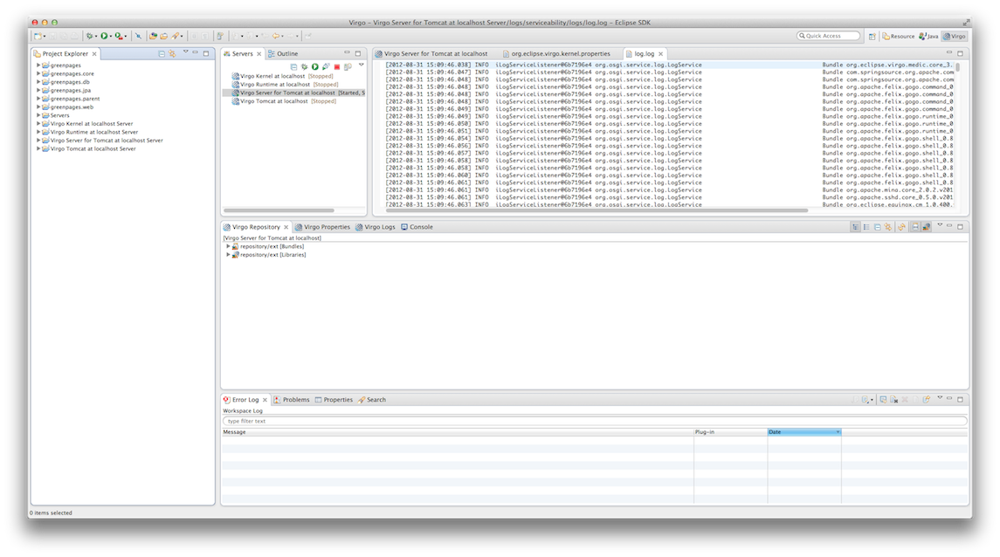

The Virgo perspective provides an environment customized to support configuring and running Virgo Runtime Environment
instances, including views for working with Virgo Runtimes. To switch to the Virgo Perspective from
your current perspective, select
→ →
And select "Virgo".
